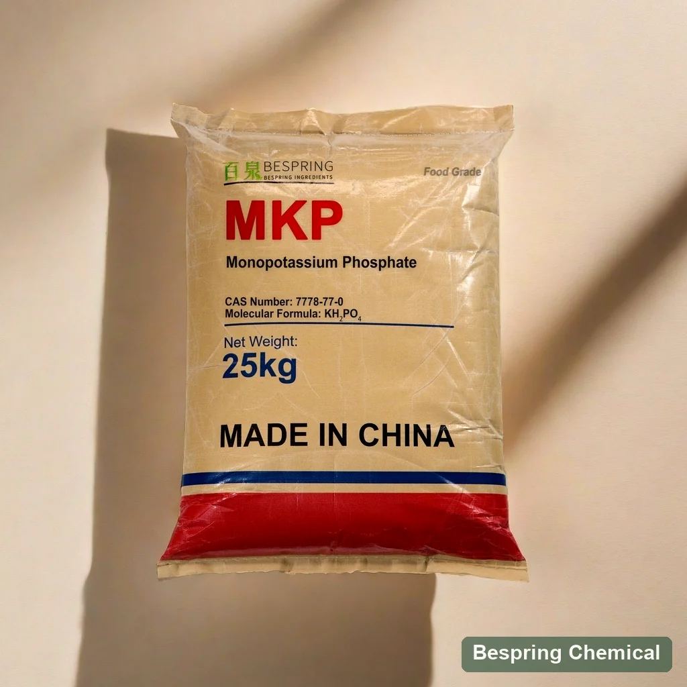
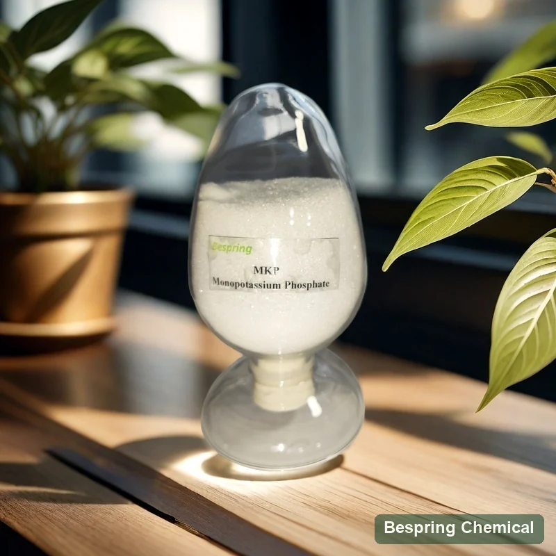
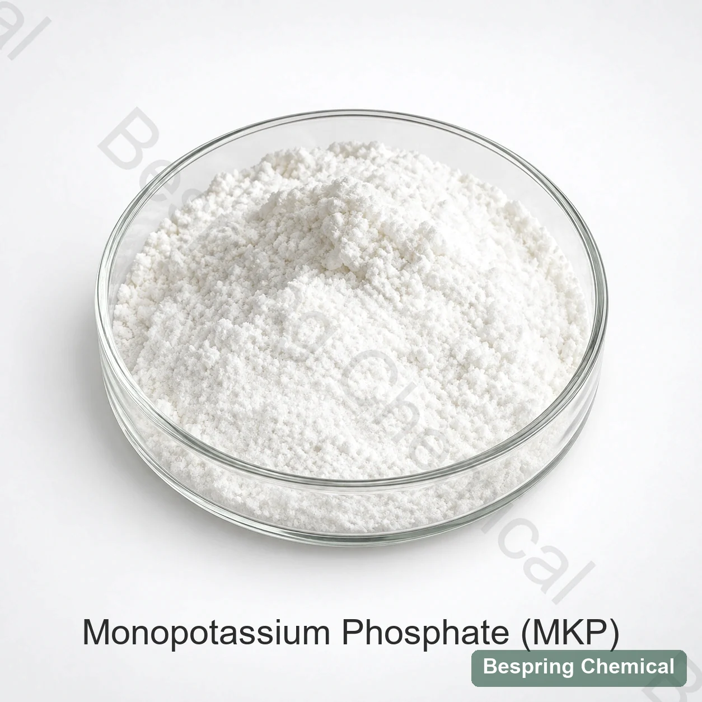

비료 MKP 0-52-34
- N-P-K 보증 분석 및 작물 응용
- 수용성 비료 및 fertigation 필요조건
- 농업 등록 및 오염 규칙
- 공식이 KH이기 때문에 음식에 대한 자격이되지 않음2PO4
음식 급료 산성 orthophosphate · E340 (i)/INS 340 (i)
Bespring 공급 음식 급료 monopotassium 인산염 (MKP)는, 또한, 과잉하고 선정한 칼륨/인산염 및 음식 발효 신청을 위한 칼륨 dihydrogen 인산염이라고 칭합니다. 주문하기 전에 음식 기준, 건조한 바시스 분석실험, 불순 한계, 육체적인 모양 및 목적지 시장을 확인하십시오.

제품 이미지 · 주문시 급료와 포장을 확인합니다
pH 4.2–4.7은 JECFA의 1 in 100 용액 참고값이지 공표된 상업적 보증이 아닙니다. *최신 주문 조건, 용도 및 목적지를 재확인하세요.
참고 assayKH2PO4 건조한 기초에 ≥98.0%
관련 상품25kg 가방
컨테이너 적재참조 : 23 MT / 20' FCL
Food-grade 리뷰COA 및 요청에 적용 가능한 인증서
제품의 화학적 정체성
Monopotassium 인산염 (MKP)는, 또한 칼륨 dihydrogen 인산염 또는 monobasic 칼륨 인산염이라고 칭하고, 산성 칼륨 orthophosphate KH입니다2PO4. JECFA는 완충기와 더불어 INS 340 (i), CAS 7778-77-0, 중립화 시약, sequestrant 및 효모 음식 기능으로 그것을, 확인합니다.
JECFA는 물에 잘 용해되며 1% 용액의 pH가 4.2–4.7이라고 설명합니다. 화학식에 나트륨은 없습니다. 공급 등급의 나트륨 등 불순물은 별도 확인해야 하며, 영양 표시는 근거 있는 조성 자료와 최종 식품 전체 배합에 따라야 합니다.
Identity, 물 가용성 및 기능: JECFA 칼륨 dihydrogen 인산염 명세. 여기의 화학식은 결정수가 없는 KH₂PO₄입니다. MKP는 인산이칼륨 및 농도가 별도로 정해진 액상 용액과 구분됩니다.
식품 등급 자격
동일한 화학 이름과 CAS는 음식과 농업 시장에서 나타났지만, 사용, 보장 된 분석, 불순 제어, 제조 / 포장 범위 및 문서는 교환 할 수 없습니다.
통제를 받기: 라벨, 많은 번호, 서명 사양 및 COA 식품 등급 공급을 식별 할 필요가 있습니다. 농업 NPK 인증서를 사용하여 재료가 적용되지 않습니다.
Application-specific 심사
다음은 정립 심사 영역입니다. 허용된 음식 범주 및 사용 조건을 확인 한 다음 실제 혼합, 처리 및 저장 조건 하에서 제공되는 등급을 검증 합니다. 고정 추가 속도 또는 성능 개선은 지정되지 않습니다.
녹는 칼륨/인산염 입력 및 산성 완충기 단면도가 요구될 때 Evaluate MKP. 재구성 PH, 무기물 맛, 명확성, 침식, 칼슘/마그네슘과 겸용성 및 선언한 영양을 검사하십시오.
phosphate/potassium 소스 및 완충기로 유기체, 중간 구성 및 표적 PH를 정의한 후에만 사용하십시오. 궤도 성장, 산성화, 수확량, 부산물 및 다운스트림 정화.
인증 된 구성에서 칼륨과 인을 계산 한 다음 입자 크기 호환성, 혼합 분리, 용해, 케이킹, 센서 충격 및 라벨 제한을 테스트합니다.
MKP와 DKP는 다른 인산염 종 및 칼륨에 인산염 비율을 제공합니다. 혼합은 표적 완충기 체계를 위해 평가될 수 있습니다; 완전한 공식에서 농도와 비율을 결정하고 실제적인 온도 및 이온 상태의 밑에 PH를 확인합니다.
방법 경계를 가진 상업 데이터
이 상업적인 참고 한계 reproduce Bespring의 본래 손실 시험 상표를 포함하여 MKP 제품 장. 그들은 가득 차있는 JECFA 적합의 일괄 처리 COA 결과 또는 보증을 측정하지 않습니다. 현재 서명한 명세, 표본 기초 및 방법, 그 후에 그 계약에 대하여 선적 COA를 비교합니다.
작은 화면에서 모든 자격 메모를 읽는 테이블을 swipe.
스와이프하거나 키보드를 사용하여 모든 열을 확인하십시오
| 시험 품목 | (주) | 상업적인 참고 | 공급 능력 |
|---|---|---|---|
| KH2PO4 assay, 건조 기초 | % | ≥98.0 | JECFA는 건조 후 최소 98.0%입니다. 상업 건조 조건 및 분석실험 방법을 확인 합니다. 일반적으로 일치한 한계는 완전성을 설치하지 않습니다. |
| 불화물 (F) | mg/kg | ≤10 | JECFA 최대는 F로 10 mg/kg입니다. 분석 방법 및 실제적인 많은 결과를 확인하십시오. |
| 중금속 (Pb로) | mg/kg | ≤10 | “Pb” 필드는 별도의 리드 테스트 또는 모든 요소 준수의 증거가 아닙니다. |
| “매트에 롯” | % | ≤0.5 | 근원 상표는 유지했습니다. 온도, 내구 및 표본 기초는 진술되지 않습니다; 건조 손실과 동등한 점화 손실은 아닙니다. |
| 물 불용성 사정 | % | ≤0.1 | 상업적인 한계는 JECFA의 0.2% 보다는 더 단단합니다. 수용성 광택이 없는 방법 및 표본 기초를 확인하십시오. |
| 비소 (As) | mg/kg | ≤3 | JECFA 최대는 것과 같이 3 mg/kg입니다; 성분 특정한 방법 및 배치 결과를 확인하십시오. |
| 카드뮴 (Cd) | mg/kg | ≤1 | 상업적인 모수; 목적지 필요조건 및 방법을 확인하십시오. |
| 수성 (Hg) | mg/kg | ≤1 | 상업적인 모수; 목적지 필요조건 및 방법을 확인하십시오. |
| 지도 (Pb) | mg/kg | ≤5 | 참고 한계는 JECFA의 4 mg/kg 보다는 더 높고 그 필요조건을 보장할 수 없습니다. |
납 제어 및 손실 테스트 방법을 확인: 상업 납 한도는 최대 5 mg/kg를 허용하지만 인용한 JECFA 모노그래프는 최대 4 mg/kg입니다. 배치는 더 낮을 수 있어도 참고 한도가 요건을 보장하지는 못합니다. 일치한 서명 규격서와 배치 COA를 요청하세요. JECFA는 105°C, 4 h 건조감량을 사용하므로 상업 “강열감량 ≤0.5%”는 시험법 없이 그 결과를 입증하지 못합니다.
INS 340(i); 건조 후 함량 ≥98%; pH 4.2–4.7(1%); 105°C에서 4 h 건조감량 ≤2%; 불용분 ≤0.2%; F ≤10, As ≤3, Pb ≤4 mg/kg.
JECFA MKP 모노 그래프 검토현재 명세/TDS, SDS의 대표 COA 및 실제적인 배치 COA를 요구하십시오. 요구되는 PH 시험, 외관/identity 시험, 입자 배급, 용해/지문 및 나트륨/염화물/황산염 통제를 정의하십시오. 유효한 재고 유효 기간, 제품/사이트 범위 및 요구된 증명서의 유효성을 확인하십시오.
대량 근거한 보고를 위해, 1 ppm는 1 mg/kg와 0.001% 동등한 10 mg/kg를 동등합니다. FDA 식품 물질 재고 PH 제어, 영양 보충 및 발효 원조를 포함한 MKP 및 기술 효과 식별. 재고 목록은 모든 음식에 대한 Bespring 급료 또는 허가의 승인이 아닙니다. 의도 한 시장의 특정 사용 및 라벨링 조건을 검증하십시오.
인산염 종을 선택하십시오
선택은 대상 pH 및 이온 기여로 시작, 공유 단어 "포타륨"과는 달리, Equal-weight 대용은 칼륨, 인 및 산 /베이스 균형 변경.
산성 칼륨 orthophosphate
산성 인산염 버퍼링 및 칼륨 / 인산염 입력이 필요한 후보자로 사용하십시오. JECFA 1 % pH : 4.2-4.7.
더 알칼리성 칼륨 orthophosphate
더 높은 pH 응답 또는 다른 칼륨에 인산염 비율이 요구될 때 비교하십시오. 통제되는 MKP/DKP 비율은 완충기 쌍으로 평가될 수 있습니다.
칼륨 입력없이 산성화
산성화가 주목적이고 칼륨 추가가 바람직하지 않을 때 비교하세요. 취급, 농도 및 부식 관리 조건이 다릅니다.
신청 승인
정확한 식품 등급 소스를 솔루션 행동, 광물 균형, 프로세스 응답 및 대상 시장 규칙에 연결하십시오.
국가 음식 또는 발효 과정, 대상 pH, 칼륨 / 인산염 기여, 총 인산염 및 필수 라벨 또는 불순 한계.
일치 정체성, 식품 표준, 불순 한계, 방법 및 추적 가능성은 현재 서명한 명세/TDS, SDS 및 대표자 COA에; 그것의 배치 COA에 각각 배달된 많을 확인합니다. 정확한 제안한 제품/사이트 및 유효 기간을 위한 검토 증명서.
기록 물 화학, 온도, 농도, 성분 순서, 용해 시간, 명확성, 앙금 및 측정된 PH.
음료 또는 분말은 맛, 명확성 및 안정성을 평가합니다. 문화는 일치한 조건 하에서 성장, 산성화, 수확량 및 다운스트림 효과를 평가합니다.
저장과 취급
외관과 창고 참고



구매자 질문
네. 인산일칼륨, 인산이수소칼륨 및 일염기성 인산칼륨은 KH₂PO₄, CAS 7778-77-0, INS 340(i) / E340(i), 화학식량 136.09 g/mol을 식별합니다. 이 페이지는 결정수가 없는 고체 염을 설명합니다. 공급되는 물리적 형태와 식품 표준을 확인하세요.
이름과 공식은 공유될 수 있습니다, 그러나 비료 NPK 분석은 식품 가공을 위한 자격이 되지 않습니다. 음식 급료 구매는 적용 가능한 ID, 불순 통제, traceability, 음식 접촉 패킹 및 근원 문서를 요구합니다. 식물 영양 필요조건을 위한 분리되는 농업 페이지를 사용하십시오.
아닙니다. JECFA 참고값은 1 in 100 용액의 pH 4.2–4.7입니다. 공표된 상업 pH 보증이나 모든 식품의 목표값이 아닙니다. 최종 제품 반응은 전체 배합, 농도, 온도, 물 및 미네랄 시스템으로 결정됩니다.
아닙니다. 납 참고 한도는 ≤5 mg/kg로 인용된 JECFA 최대 4 mg/kg와 다릅니다. 배치 실측값이 더 낮을 수 있지만 상업 한도는 해당 요건을 보장하지 못합니다. 강열감량 방법과 다른 승인 항목도 전체 비교 전에 정의해야 합니다.
아닙니다. 시험은 온도, 시간 및 시료 처리로 정의됩니다. 상업 자료는 방법 없이 강열감량 ≤0.5%를 기재하지만 JECFA는 105°C, 4 h에서 건조감량 ≤2%를 규정합니다. 상업 시험의 이름을 바꾸거나 이를 유리 수분으로 해석하지 마세요.
동일 중량 교체가 제안되지 않습니다. MKP 및 DKP는 칼륨 인산염 비율과 산/기반 행동과 다릅니다. 필수 이온 균형, 측정 된 pH, 용해 및 처리 결과물을 소금 또는 혼합 선택하기 전에 비교하십시오.
상업 참고 조건은 25 kg 포대, 최소 주문 500 kg 및 20피트 만재 컨테이너당 23톤입니다. 최신 주문 조건, 팔레트 배치 및 실제 적재량을 재확인하세요. 서늘하고 건조하며 환기되고 30°C 이하인 장소에 보관하며, 공급 등급 서류에서 보관기간을 확인하세요.
식품 등급, 필수 표준 및 목적지, 건조-균류 분석실험 및 중요한 불순 한계, 단단한 form/particle 필요조건, 신청 및 과정, 표적 PH 및 성분 K/P 또는 동등한 보고 기초 제공하십시오. 양, 패킹, 목적지 항구, 납품 기간/timing 및 필수 명세/TDS, SDS, COA 및 증명서 포함하십시오.
검토 2026-10-05 · 신원/특정 참고: FAO/WHO JECFA · 기술 효과 컨텍스트: 미국 FDA 재고.
규격 중심 조달
식품 등급 표준 및 미네랄 기반을 식별하므로 응답은 비료 MKP와 혼동되지 않습니다.
당신의 급료 및 목적지 시장을 말하십시오 그래서 우리는 당신의 순서를 위해 어떤 문서가 유효하다는 것을 확인할 수 있습니다.
외부 참조는 일괄 인증서 또는 Bespring 제품 사양이 아닙니다.